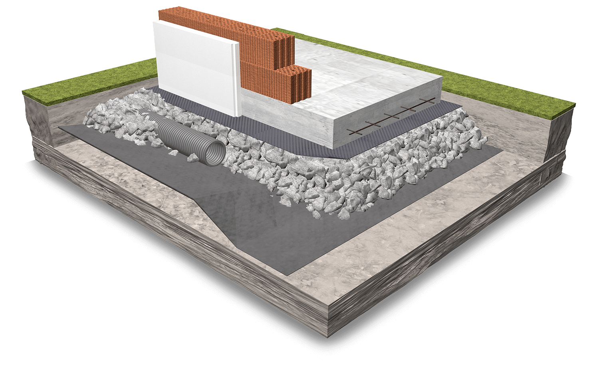
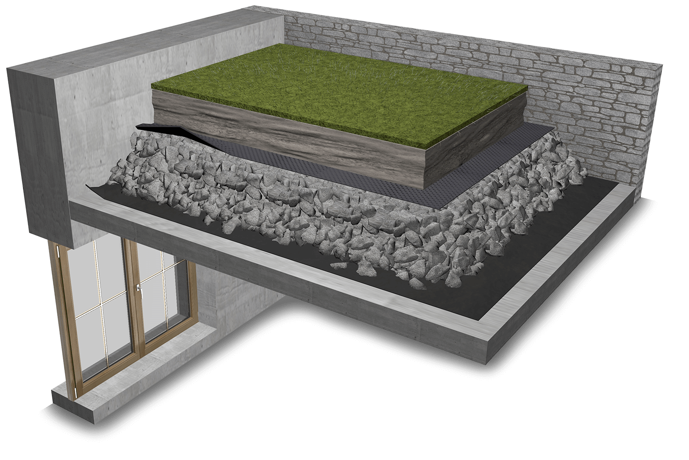

DIE ANWENDUNGEN
Guter Unterbau.
Viele Möglichkeiten.
Von der Bodenplatte bis zum Gründach: Entscheidend sind der geplante Aufbau, die Belastung und die passende Materialvariante.
01 — BODENPLATTE
Wärmedämmung,
die mitträgt.
Das NORM-Datenblatt nennt lastabtragende Wärmedämmung unter der Bodenplatte gemäß ETA-24/0894. Der Aufbau verbindet Dämmung mit einer lastabtragenden Schüttung.
Die ETA betrifft überwiegend statische Lasten und schließt punktuelle Einzellasten aus. Planung und Einbau richten sich nach den vollständigen technischen Unterlagen.
Policell Norm entdecken

02 — DACH & LANDSCHAFT
Mehr Freiraum.
Weniger Gewicht.
Leicht- und Ausgleichsschüttungen für Parkdächer, Dachflächen und Landschaftsbau gehören zu den in den Datenblättern genannten Einsatzgebieten.
Die bestehende Anwendungsskizze zeigt Betondecke, Vliesmaterial beziehungsweise Dachhaut, Schaumglasschotter, Trennvlies, Humus und Begrünung.
Dachaufbau besprechen03 — TIEFBAU & INFRASTRUKTUR
Leichtschüttungen
für große Aufgaben.
Die Datenblätter nennen Tiefbauobjekte im Deich-, Straßen- und Brückenbau. Die bestehende Website führt außerdem Straßenbau auf schlecht tragfähigen Böden und Dammschüttungen als Beispiele an.
Welches Produkt geeignet ist, wird anhand der Lasten, Feuchtebedingungen und des geplanten Aufbaus festgelegt.
Materialvarianten vergleichen04 — BESTAND & SANIERUNG
Neuer Spielraum
im Bestand.
Gewölbeauffüllungen und Hinterfüllungen sind in den technischen Datenblättern als Einsatzgebiete aufgeführt. Gebundene oder ungebundene wärmedämmende Schüttungen können je nach Planung zum Einsatz kommen.
Die Freigabe für den konkreten Aufbau erfolgt projektbezogen. Schaumglasschotter ist laut Datenblatt nicht zur Verwendung in Beton, Mörtel oder Einpressmörtel vorgesehen.
Mit der Fachberatung sprechenIHR PROJEKT BEGINNT MIT EINEM GESPRÄCH.
Was haben
Sie vor?
Materialwahl, technische Beratung oder Lieferung:
Wir freuen uns auf Ihr Vorhaben.